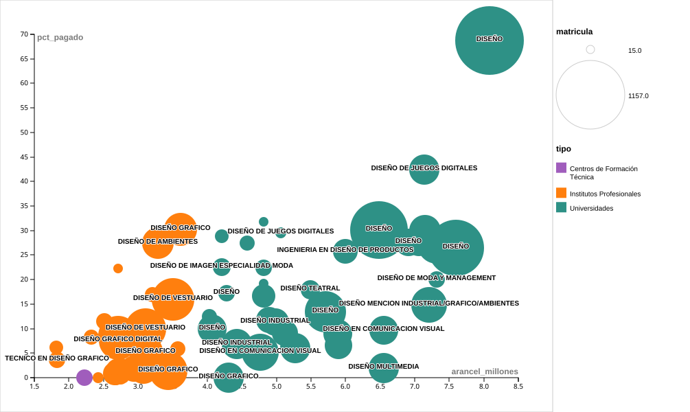

Este proyecto parte desde una sospecha: la existencia de una brecha socioeconomica entre quienes ingresan a las universidades, institutos y CFTs. Si bien, la carrera de Diseño suele presentarse como un espacio creativo, flexible y profesionalizante, pero esa promesa convive con aranceles altos, una oferta institucional segmentada y diferencias en el origen escolar de quienes acceden a los programas, como se ve en las composiciones matriculares.
El análisis combina bases del Servicio de Información de Educación Superior (SIES) sobre oferta académica, vacantes, aranceles y composición de matrícula. La variable de origen escolar se usa como aproximación indirecta al origen socioeconómico: municipal y servicios locales, particular subvencionado, particular pagado y administración delegada.
Hipótesis de trabajo
Los datos sugieren que Diseño reproduce desigualdades de origen más que corregirlas: los programas de mayor arancel concentran una participación más alta de estudiantes provenientes de establecimientos particulares pagados, mientras que los programas más accesibles económicamente muestran una composición de origen escolar muy distinta.Por no mencionar también las diferencias entre años de acreditación o empleabilidad. Existe una tendencia en el origen escolar entre quienes ingresan a determinados establecimientos.
Preguntas que guían el análisis
- ¿Dónde se concentra la oferta de cupos para estudiar Diseño?
- ¿Cuánto cambia el costo según el tipo de institución?
- ¿El origen escolar de los estudiantes varía según el tipo de institución?
- ¿Existe relación entre el arancel de un programa y el perfil de origen escolar de sus estudiantes?
- ¿Qué información permite explorar la tabla para seguir ahondando esta discusión?
¿Qué tipo de institución concentra más vacantes?
El primer paso es mirar la estructura de la oferta. Si la carrera se piensa solo desde la universidad, se pierde parte importante del mapa: en los datos 2026, los Institutos Profesionales concentran más vacantes que las universidades, y los Centros de Formación Técnica tienen una presencia muy menor.
Diseño no se organiza solo como una carrera universitaria tradicional: el sistema está fuertemente apoyado en la oferta técnico-profesional. Esto importa porque el tipo de institución no es solo una diferencia administrativa — también define el nivel del arancel y, como se verá más adelante, el perfil de origen escolar de quienes estudian.
¿Cuánto cuesta estudiar Diseño según el tipo de institución?
La pregunta por la movilidad social exige mirar el costo de acceso. Los aranceles de los programas de Diseño no se distribuyen de forma pareja: hay una separación casi total entre lo que cobran las universidades y lo que cobran los Institutos Profesionales, sin casi ningún traslape entre ambos grupos.
El 43,9% de los programas universitarios tiene un arancel entre $4 y $5 millones anuales, y el resto sube desde ahí. Los Institutos Profesionales, en cambio, concentran casi toda su oferta entre $2 y $4 millones. Elegir universidad implica asumir un piso de costo que los IPs no tienen. Esa diferencia es la barrera económica inicial que este proyecto busca conectar con el origen escolar de los estudiantes.
¿El origen escolar varía según el tipo de institución?
El diagrama muestra cómo se distribuye la matrícula de Diseño según el tipo de establecimiento escolar de origen. Los flujos tienen grosores proporcionales a la cantidad de estudiantes, lo que permite comparar directamente la composición de cada tipo de institución.

El flujo más grueso que llega a las universidades proviene de establecimientos particulares pagados, mientras que los Institutos Profesionales concentran su matrícula en el particular subvencionado y el municipal. Los Centros de Formación Técnica aparecen como hilos casi invisibles, lo que refleja su participación marginal en el sistema. Esta diferencia en la composición del origen escolar es la señal más directa para evaluar si el tipo de institución actúa como filtro socioeconómico.
¿El origen escolar cambia según el arancel del programa?
Para aproximarnos a la hipótesis programa a programa, cruzamos el arancel anual con el porcentaje de estudiantes de colegios particulares pagados. La variable de origen no equivale directamente al ingreso familiar, pero permite observar patrones de acceso asociados al recorrido escolar previo.
La señal más fuerte aparece en los tramos superiores: cuando el arancel supera los ocho millones de pesos, la participación de estudiantes de establecimientos particulares pagados sube de forma marcada, superando el 79%. El gráfico siguiente muestra esa misma relación a nivel de programa individual.

Cada círculo es un programa de Diseño. La nube de puntos de Institutos Profesionales se concentra en la esquina inferior izquierda: aranceles bajos y muy poca presencia de estudiantes de colegios privados. Los programas universitarios se dispersan hacia la derecha y hacia arriba, con varios casos que superan el 30% e incluso el 40% de Part. pagado. El programa con mayor arancel del sistema —Diseño en la UC, con $8 millones anuales— concentra el 68,8% de estudiantes de colegios particulares pagados. La tendencia es clara: a mayor costo, mayor concentración de estudiantes de origen privilegiado.
Explora la oferta de carreras de Diseño
La tabla reúne las carreras de Diseño registradas en el Buscador SIES 2025–2026. Se puede filtrar por institución, región, tipo de programa y nivel. Cada fila incluye el origen escolar de la matrícula para que la exploración conecte con la hipótesis del proyecto.
Cargando datos…
| Carrera | Institución | Tipo | Región | Nivel | Arancel 2026 | Matrícula 2025 | Municipal y SLEP | Part. subvencionado | Part. pagado |
|---|
Conclusiones
Hay una separación visible entre el universo de programas universitarios y el de los IPs: en costo, en composición de origen escolar y en la relación entre ambas variables. Los programas más caros concentran los estudiantes de origen más privilegiado. Diseño, al menos en su segmento universitario de mayor valor, opera más como un espacio que reproduce las condiciones de quienes ya partieron con ventaja.
Fuentes
Servicio de Información de Educación Superior (SIES), bases de datos de oferta académica 2026 y Buscador de Carreras SIES 2025–2026; elaboración propia a partir de bases consolidadas de carreras de Diseño en universidades, institutos profesionales y centros de formación técnica; visualizaciones interactivas con Chart.js; visualizaciones SVG elaboradas con RAWGraphs; criterios de visualización apoyados en el Catálogo de Visualización de Datos.